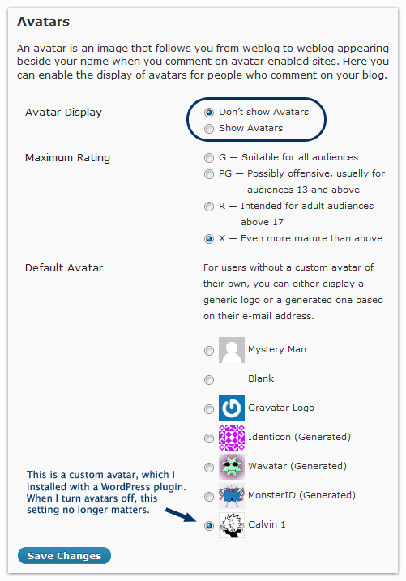
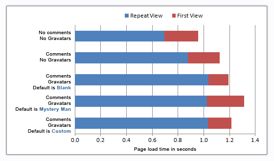
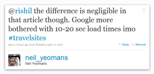

There has been a lot of buzz lately about page speed. Matt Cutts has commented about how page speed might be added as a signal to Google’s ranking algorithm, sometime in the future. Google has released the Site Performance feature in the Labs section of Google Webmaster Tools, despite the fact that it’s useless. And of course, all the popular SEO/SEM blogs have predictably started churning out virtually-useless blog posts about how to make your website faster.
Update: Apr 9, 2010 – Google has officially announced that page speed has already been added as a ranking signal. That announcement, combined with this post, basically means you need to start cracking down on bullshit comments on your blog. If a comment doesn’t add to the post’s topic, then all it’s doing is hurting your site’s chances of ranking highly in Google. I’m not saying you should flip out and start deleting all the comments from your blog, but…well…yes, that’s exactly what I’m saying.
Regardless of whether or not Google makes page speed a ranking factor, optimizing page load times and overall site speed is a best practice that all web developers should be mindful of. Besides, if the Site Performance Lab is any indication, I’d say Google won’t have their page speed data signal “production-ready” for another 15 years. Using the Google Toolbar to detect page load times is quite frankly one of the dumbest ideas I’ve ever heard, and I sincerely hope it’s just another scare tactic to get webmasters’ minds off of SEO and PageRank (and onto something that actually benefits Google). I don’t know how Google collects the speed data they use in their AdSense quality score, but I pray to God it’s more robust than this Site Performance joke. Anyway, rants aside, the fact remains that everyone is suddenly very interested in making their websites faster…and this post is going to address one small piece of that puzzle: WordPress comments.
How does WordPress handle comments?
When WordPress responds to a page request, it has to figure out how to output the comments associated with that particular post. Here is a very basic overview of the steps WordPress follows:
- Fetch the comments from the
wp_commentsdatabase table. - For each comment that matches the page ID being served, loop through and insert the raw data into HTML code. Here’s a simplified example:
<h6><a href="comment_author_url">comment_author</a></h6>
<p>comment_date</p>
<p><img src="http://www.gravatar.com/avatar/comment_author_email /></p>
<p>comment_content</p>
How does WordPress handle Gravatars?
If a post has 0 comments, the steps shown above end pretty quickly because there’s nothing more for WordPress to process. However, even if a post has several comments to process, the computation cost is relatively insignificant when you compare it to the cost of downloading each commenter’s Gravatar. In other words, WordPress can build the HTML page pretty quickly and send it to your browser, but then your browser still has to request the Gravatar images from gravatar.com. As you’re about to see, it is the multiple HTTP requests for Gravatar images that really slow down your pages. I’ll try to explain why that is…by giving you an overview of how Gravatar works (as I understand it). Here’s the gist:
- For each comment, WordPress takes the commenter’s email address and applies the md5 hash algorithm to it (in order to protect commenters’ email addresses).
- The hash is attached to a gravatar.com URL, which creates the src destination for the Gravatar’s img tag. For example:
<img src="http://www.gravatar.com/avatar/3904bc1a75d86eb05dd07425214002df" /> - After the HTML page is sent to your browser, your browser sends a request to Gravatar’s servers for each Gravatar image embedded in the comments.
- Gravatar’s servers check their records for the hashed email address. If it exists (meaning the email address was registered at gravatar.com), Gravatar returns the corresponding image. If it doesn’t exist, Gravatar redirects to your blog’s default image, which you can select from the WP admin menu for
Settings→Discussion:

Why do Gravatars slow down WordPress?
Enabling comments and custom Gravatars on your WordPress blog can definitely encourage your visitors to participate and join the conversation, but on the other hand, the Gravatar system has some inherent flaws that negatively impact your page speed. Here are some examples:
- Every comment contains an img element that points to a unique URL on gravatar.com. This means that every single person who comments on your blog post is costing you an extra HTTP request…regardless of whether or not they’ve registered their email address at gravatar.com.
- If a user is NOT registered at Gravatar.com, their image request will be redirected to the default location. This redirect means yet another HTTP request, either to your server or another gravatar.com URL (depending on what you set your default image as).
- Several different src URLs return the same exact image. This is because every email address results in a unique hash, which in turn creates a unique URL. Many of these unique URLs will redirect to the default Gravatar image, because not all your visitors will be signed up for Gravatar. This triggers a “page speed tip” in Google Webmaster Tools that looks like this:
Serve resources from a consistent URL
The following resources have identical contents, but are served from different URLs. Serve these resources from a consistent URL to save 10.7 KB and 5 requests:
- http://www.gravatar.com/avatar/f5264f0487ece922e2f512b58e2bf1d8?s=48&d=http%3A%2F%2Fwww.seomofo.com%2Fwp-content%2Fthemes%2Fthesis_16%2Fcustom%2Fimages%2Fgravatars%2Fc01.png%3Fs%3D48&r=X
- http://www.gravatar.com/avatar/f018690430517b80b907581087479ebf?s=48&d=http%3A%2F%2Fwww.seomofo.com%2Fwp-content%2Fthemes%2Fthesis_16%2Fcustom%2Fimages%2Fgravatars%2Fc01.png%3Fs%3D48&r=X
- http://www.gravatar.com/avatar/5160428f6f123b4bd5b83924eb87fefd?s=48&d=http%3A%2F%2Fwww.seomofo.com%2Fwp-content%2Fthemes%2Fthesis_16%2Fcustom%2Fimages%2Fgravatars%2Fc01.png%3Fs%3D48&r=X
- http://www.gravatar.com/avatar/d36c9a1e57814dfbf9f16457f3f53405?s=48&d=http%3A%2F%2Fwww.seomofo.com%2Fwp-content%2Fthemes%2Fthesis_16%2Fcustom%2Fimages%2Fgravatars%2Fc01.png%3Fs%3D48&r=X
- http://www.gravatar.com/avatar/9081da00619e7205805ecc0735dda190?s=48&d=http%3A%2F%2Fwww.seomofo.com%2Fwp-content%2Fthemes%2Fthesis_16%2Fcustom%2Fimages%2Fgravatars%2Fc01.png%3Fs%3D48&r=X
- http://www.gravatar.com/avatar/b958344045e263b90eb521a64aaedb4e?s=48&d=http%3A%2F%2Fwww.seomofo.com%2Fwp-content%2Fthemes%2Fthesis_16%2Fcustom%2Fimages%2Fgravatars%2Fc01.png%3Fs%3D48&r=X
Page Speed Testing
Below you’ll find some page speed data I collected, using this web page speed tool. It is the same tool Matt Cutts mentioned in his WebPro News interview. The page I used in this test was my article about how stupid people hate Twitter’s new retweet feature, which had a total of 18 comments (from 10 unique users) at the time of testing. The detailed results are linked to below, but I’ve summarized the data results for you as well.

| Load Time |
First Byte |
Start Render |
Requests | Bytes In | Bandwidth | |
| No Comments (1st View) | 0.956 | 0.502 | 0.726 | 20 | 227 KB | 4.09 Mbps |
| No Comments (2nd View) | 0.695 | 0.537 | 0.689 | 2 | 9 KB | |
| Comments | No Gravatars (1st View) | 1.122 | 0.620 | 0.909 | 22 | 238 KB | 3.90 Mbps |
| Comments | No Gravatars (2nd View) | 0.876 | 0.677 | 0.829 | 2 | 20 KB | |
| Comments | Gravatars Default = Blank (1st View) | 1.191 | 0.629 | 0.917 | 37 | 253 KB | 3.70 Mbps |
| Comments | Gravatars Default = Blank (2nd View) | 1.037 | 0.673 | 0.804 | 8 | 23 KB | |
| Comments | Gravatars Default = Mystery Man (1st View) | 1.312 | 0.629 | 0.922 | 38 | 260 KB | 3.12 Mbps |
| Comments | Gravatars Default = Mystery Man (2nd View) | 1.025 | 0.662 | 0.793 | 8 | 23 KB | |
| Comments | Gravatars Default = Custom (1st View) | 1.215 | 0.633 | 0.911 | 37 | 265 KB | 3.77 Mbps |
| Comments | Gravatars Default = Custom (2nd View) | 1.031 | 0.675 | 0.822 | 8 | 23 KB |
For the full results of each speed test, click the links below:
No comments • No Gravatars → Speed Test 1
Comments • No Gravatars → Speed Test 2
Comments • Gravatars • Default is Blank → Speed Test 3
Comments • Gravatars • Default is Mystery Man → Speed Test 4
Comments • Gravatars • Default is Custom → Speed Test 5
What can I do to speed up my comments?
Here are some suggestions for speeding up your WordPress posts by optimizing your comment settings. I will try to list these based on how big of an impact they have on your page speed. The suggestions that could improve your page speed the most are listed first:
- Disable comments completely.
- Load comments dynamically (e.g. a button that says “click here to view comments”).
- Delete any comments that don’t add value to your post. (Ego boosts don’t add value.)
- Disable Gravatars.
- Set your default Gravatar to Blank.
- Set your default Gravatar to a custom image on your server.
- Restrict your Gravatar images to small dimensions (e.g. 32px).
Kill the Smiley Faces!
I just thought of one more setting you can tweak to speed up your WordPress comments. You can UN-check the option that says “Convert emoticons like :-) and :-P to graphics on display.” This will prevent WordPress from having to request the emoticon images such as  and
and  .
.
Something I found interesting about WordPress is that the Mystery Man default Gravatar image is stored on gravatar.com. So the reason why the Blank avatar and my custom avatar returned faster page load speeds…is because they are both stored on my own server. Theoretically, you might be able to speed up your page loads by simply saving a copy of Mystery Man to your own server and designating it as your default (I’ll eventually write a post that explains how to do this). Older browsers will only maintain 2 connections to any given host, so if your web browser is requesting ALL the Gravatar images from www.gravatar.com, then it can only grab two at a time. On the other hand, if the default Gravatar image is located on your own server, then your web browser can grab it even when both www.gravatar.com connections are busy.
To put it all in perspective…
 After reading a Twitter response to this article, I realized that I wasn’t entirely clear about how much comments slow down WordPress posts…as a relative measurement. I’ll try to put it into perspective for you.
First of all, I only ran the speed tests on one page, so certainly these results will vary, depending on variables such as:
- How fast is your server, compared to gravatar.com’s server?
- How many comments does the WordPress post have?
- How many of those comments are from unique visitors (i.e. unique email addresses)?
- What type of web browser are your visitors using to view the page?*
* Older browsers only permitted 2 persistent connections per host. Newer browsers support more, and therefore multiple Gravatar images can be downloaded from www.gravatar.com in parallel. For more details, see the Roundup on Parallel Connections by website speed guru, Steve Souders.
One of the reasons why my test results only differ by a couple 10ths of a second is because my test page only had 18 comments, and only 10 of those were from unique email addresses. Also, I’ve been busy tweaking. My website, in order to improve overall performance. So try not to think in terms of my specific test page, because this data will mislead you:
- Without any comments, the test page loaded in = 0.956 seconds.
t1 = 0.956s - After I enabled the comments (without Gravatars), the test page required an additional 0.166 seconds to load.
t2 = t1 + 0.166s - After I enabled the Gravatars, the test page required an additional 0.190 seconds to load.
t3 = t2 + 0.190s = t1 + 0.356s
Why is that data misleading?
It’s misleading because some of you [lesser intelligent] people don’t know the importance of relative measurements, and you’ll interpret my data to mean something like this:
Hooray! Comments and avatars only slow down a WordPress post by 0.356 seconds! That’s totally…like…not a long time to wait. Social media really is the best internet marketing strategy evar, tee-hee! I’m gonna put a trillion comments on every page of my site! Even the comments on my comments will have comments!
Instead, look at it from a glass-half-empty point of view:
- Without any comments, the test page loaded in some [unknown] amount of time.
t1 = x - After I enabled the comments (without Gravatars), the test page took 17.3% longer to load.
t2 = (117.3%)(t1) - After I enabled the Gravatars, the test page took 16.9% longer to load than the page without Gravatars. And compared to the first page (which had no comments and no Gravatars), the test page took 37.2% longer to load.
t3 = (116.9%)(t2) = (137.2%)(t1)
Get your math equations out of my face and just spell it out in plain English!
What I’m telling you is…
Adding 18 comments to my blog post made it 37.2% SLOWER.
I’m still not convinced!
Alright, I got another test case for you. This one is a comparison between two different posts on Outspoken Media: one that has 5 comments vs one that has 130 comments. The content isn’t exactly the same, but it’s close enough. No? It’s not close enough? You demand more-accurate testing? Fine, I copied the content portion of these posts, pasted it into empty HTML pages, hosted them on my own site, and ran the tests again on just the content. If you really want to see the difference, the results are here: Page#1 Page#2. The only relevant information those results show is that the page with 130 comments has a slight disadvantage (due to an extra image) and takes 0.2 seconds longer to load (not including the comments, of course). Anyhow…let’s get to the important stuff now. Let’s compare the page load times of the actual posts…comments and all.
Speed Test #1
- Post: It’s Not the Recession, You Just Suck
- 130 comments
- 85 unique Gravatars
- Average load time before cache: 9.315s
- Average load time after cache: 4.155s
- full test results
Speed Test #2
- Post: Penalties, issues and filtering; it’s all just confusing me
- 5 comments
- 5 unique Gravatars
- Average load time before cache: 4.636s
- Average load time after cache: 2.352s
- full test results
In plain English
The results of this second set of tests indicate that…
Compared to the post with 5 comments…the post with 130 comments took roughly TWICE as long to load.
Grand Finale
Click the small green button below to see the waterfall graph comparison between the 130-comment post and the 5-comment post.